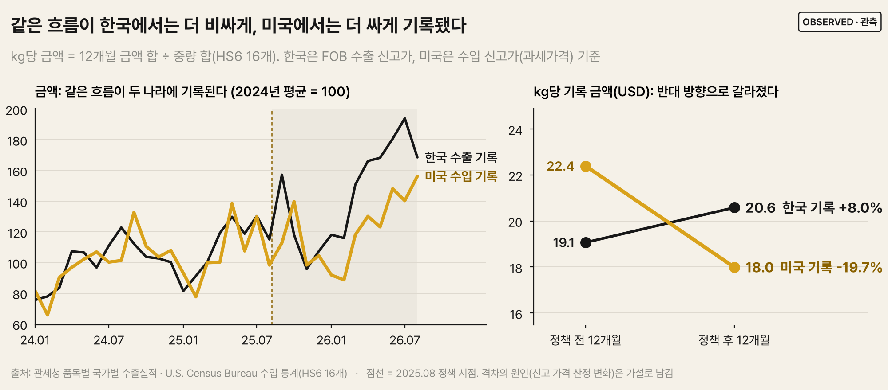
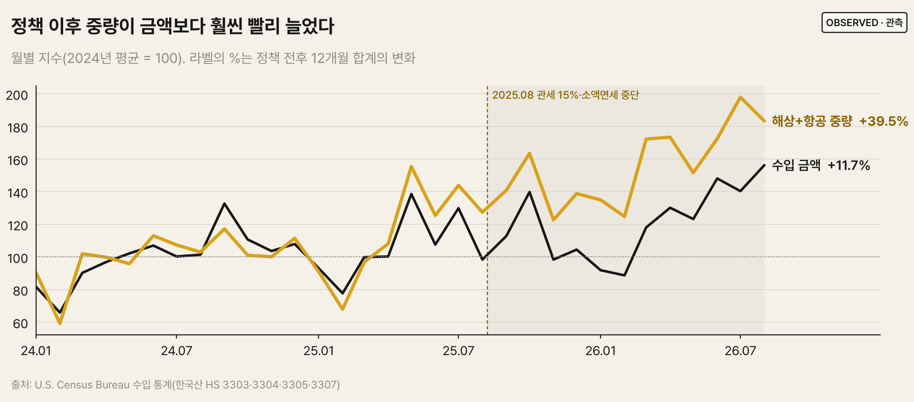
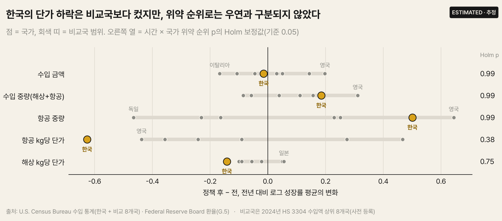
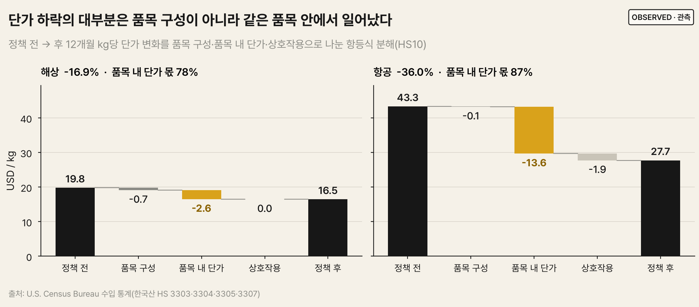
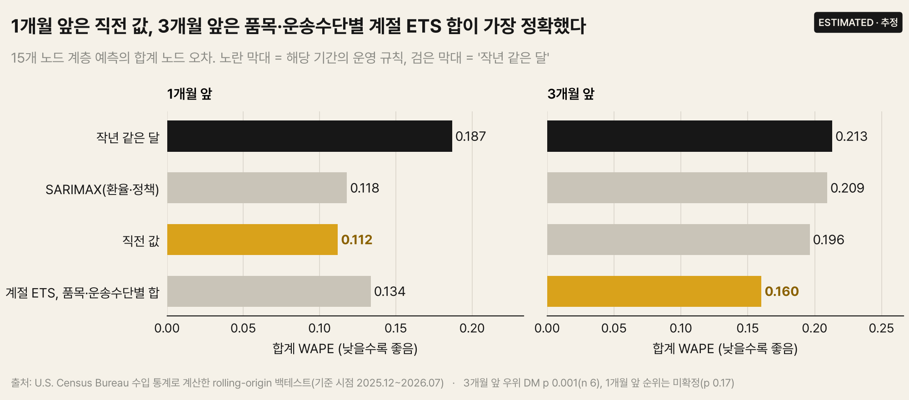
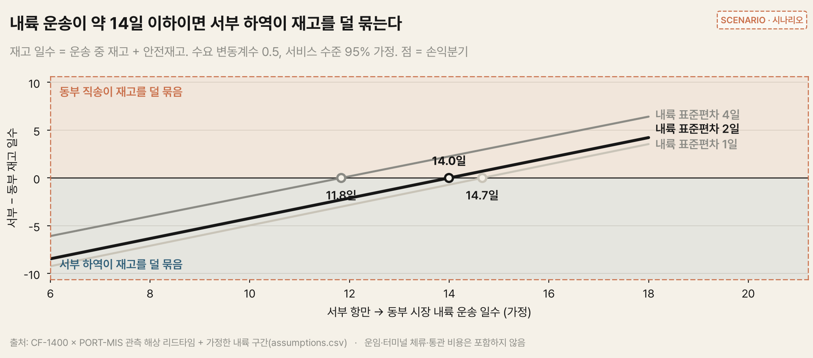

관세와 소액면세 중단 이후,
미국 통계가 말하지 않은 것
2025년 8월, 한국산 수입품에 15% 상호관세가 적용되고(8/7) 미국 소액면세가 모든 국가에 대해 중단됐다(8/29). 미국 통계만 보면 그 뒤 K-뷰티는 "더 싸게, 더 많이" 들어왔다. 이 프로젝트는 그 이야기가 사실인지 다른 나라, 한국 측 통계, 환율로 검증하고, 미국 창고에 재고를 두는 브랜드의 SCM 담당자가 내릴 결정으로 연결했다. 원인 검증의 판정 기준은 데이터를 받기 전에 사전 등록했다.

질문과 답
| 질문 | 답 | 근거의 강도 |
|---|---|---|
| 무엇이 늘었나 | 미국 기록 기준 금액 +11.7%, 해상+항공 중량 +39.5% | 강함(전수 통계) |
| 한국만의 변화였나 | 아니다. 8개국 비교에서 사전 등록 기준 통과 지표 없음. 항공 단가 급락은 영국·프랑스·일본도 | 강함: 금액은 모든 변형에서 0 근처 |
| 통계에 새로 잡힌 소포였나 | 아니다. 미국/한국 기록 비율이 오히려 −14% | 강함: 시차·3개월 합계로도 같음 |
| 그럼 무엇이 달라졌나 | 같은 물량의 kg당 금액: 한국 측 +8%, 미국 측 −20%. 전환점은 관세 인상 시기(7~8월) | 중간: 원인 확정 불가 |
| 환율·품목 구성 때문인가 | 아니다. 원화 약세는 미국 측 하락의 10~23%. 한국 측 상승은 구성 이동, 품목 내 단가는 그대로 | 강함(항등식) |
| 어떻게 예측하나 | 1개월 앞 직전 값(WAPE 0.112), 3개월 앞 품목·운송수단별 계절 ETS 합(0.160) | 3개월 앞 DM p 0.001(n 6) |
| 무엇을 결정하나 | 리드타임은 정책 후 그대로. 내륙 약 14일 이하면 서부 하역 유리. LA·롱비치 2주 중단 = 5,500만 달러 지연 | 관측 + 시나리오 |
데이터와 파이프라인
| # | 원천 | 기관 | 용도 |
|---|---|---|---|
| 1 | 수입 통계 imports/hs (한국산) | 미국 Census | 물량·금액·단가 (HS10 × 월) |
| 2 | 수입 통계 imports/porths | 미국 Census | 하역항 집중도 |
| 3 | CF-1400 외국 무역선 입항 기록 | 미국 CBP | 부산 출항 → 미국 입항 신고 리드타임 (선박 단위 연결, 661건) |
| 4 | PORT-MIS 선박운항정보 | 해양수산부 | |
| 5 | 수입 통계 imports/hs (비교 8개국) | 미국 Census | 국가 비교 |
| 6 | 품목별 국가별 수출입실적 | 관세청 | 미러 분석, 한국 HSK10 세목 |
| 7 | 월평균 환율 7종 | Federal Reserve Board G.5 | 환율 통제·분해 |
발견 1. 미국 기록: 물량은 늘고 kg당 단가는 떨어졌다

정책 후 12개월 금액은 20.0억 → 22.4억 달러(+11.7%), 해상+항공 중량은 +39.5%다. kg당 단가는 해상 −16.9%, 항공 −36.0%이고 하락의 78~87%가 같은 HS10 품목 안에서 일어났다. 여기까지가 미국 통계만으로 본 이야기다.
발견 2. 한국만의 변화가 아니었다

- 사전 등록 기준을 통과한 지표가 없다(Holm 보정 후 최소 0.38). 금액의 한국 특유 효과는 −0.01로, 비교국 구성·정책 시점·환율 통제를 바꾼 7가지 변형 모두에서 0 근처다.
- 항공 kg당 단가는 한국이 가장 크게 떨어졌지만(−0.55) 영국·프랑스·일본도 함께 떨어졌다. 소액면세 중단은 모든 국가에 적용된 정책이다.
- 수입 중량과 해상 단가는 정책 전부터 비교국과 추세가 벌어지고 있어(평행 추세 위반) 이중차분 해석에서 제외했다.
- 처리군이 한 나라라 표준오차 대신 위약 순위로 추론했고, 검출 한계(MDE)를 함께 보고해 "효과 없음"과 "판정 불가"를 구분했다.
발견 3. 같은 물량, 다른 가격 — 한국 수출 통계와의 미러 분석
소액면세 소포는 2025년 8월까지 미국 통계에 없었지만 한국 수출 신고에는 있을 수 있다. 소포가 미국 통계에 새로 잡혔다면 미국 수입 / 한국 수출 비율이 올라가야 한다(사전 등록 Q2). 두 나라 세번이 공유하는 HS 6단위로 맞춰 비교했다.
| 확인 | 결과 |
|---|---|
| 금액 비율 (미국/한국), 주 검정 | −14% (HAC p 0.005). 예측과 반대 방향 |
| 미국 항공 / 한국 수출 | 오르지 않음 (−9%, p 0.15) → 소포 가설 지지 근거 없음 |
| 1개월 시차 · 3개월 합계 | −0.14 · −0.15. 운송 시차 때문이 아니다 |
| 12개월 성장률 | 한국 기록 +33%, 미국 기록 +12% |
| kg당 신고 금액 | 한국 측 +8%, 미국 측 −20% (12개월 합계) → 미국 ÷ 한국 kg당 기록 비율 1.17 → 0.87(약 26% 하락) |
| 외부 집계 14.5억 vs 미국 10.8억 달러 | 외부 집계 = 한국 기준 HS 33 + 비누(14.49억). 차이 3.7억 중 2.9억이 양국 통계 격차, 0.8억이 품목 범위 |
발견 4. 환율과 품목 구성으로는 설명되지 않는다

| 점검 | 결과 |
|---|---|
| 환율 (사전 등록 Q3) | 원화 약세(1,400 → 1,461원/달러)가 미국 측 달러 단가 하락의 해상 23%, 항공 10%만 설명. 원화로 환산해도 크게 하락 |
| 한국 측 세목 (Q4) | 한국 기록의 kg당 금액 상승(+1.52달러)은 구성 효과 +2.08, 품목 내 +0.30. 미국 기록은 구성 −0.79, 품목 내 −3.57 |
| 세번 분류 차이 | 한국의 마스크 팩 수출(1.14억 달러)이 미국 330790 전체(0.78억 달러)보다 크다 → 세목보다 전체 합계 비교가 믿을 만하다 |
발견 5. 정책 충격 직후에는 '작년 같은 달'로 예측하지 않는다

- 품목 4개 × 운송수단 2개, 15개 노드 계층을 rolling origin으로 백테스트했다(통계 모델 6종 + 머신러닝 9종, 미래 정보 차단을 테스트로 검증).
- 1개월 앞은 직전 값(0.112), 3개월 앞은 계절 ETS를 품목·운송수단별로 예측해 더한 것(0.160)이 가장 정확했다. 환율·정책 더미 SARIMAX도 직전 값을 이기지 못했다.
- 머신러닝 9종(76개 설정)을 같은 규칙으로 비교했다. 기준 시점마다 최근 3개월 검증 성적으로 고른 모델은 1개월 앞 0.109로 직전 값 0.112보다 낮았지만, 차이가 통계적으로 구분되지 않아(DM p 0.91) 직전 값 기준선을 유지했다. 공식 기준은 Linux 고정 환경이고, 작성 환경 값 0.138은 진단 이력이다. 검증 순위와 실제 순위의 상관은 0에 가까웠다(작성 환경). 부스팅 3종은 직전 값을 이겼지만(0.082~0.103) 결과를 본 뒤의 비교라, 공개 전 고정 예측으로 검증한다.
- 80% 예측 구간의 실제 포함률은 71~78%로 좁다. 한국 통계를 선행 지표로 쓰는 예측은 이득이 없었다(양국 기록 비율이 이동 중).
- 2026-09~11 예측 30개와 머신러닝 예측 240개를 데이터 공개 전에 SHA-256과 함께 고정했고, 공개 후 채점한다.
발견 6. 담당자를 위한 판단 기준

| 결정 | 기준 |
|---|---|
| 하역 거점 | 해상 수입 금액의 82%가 LA·롱비치. 해상 구간 서부 13.1일, 동부 27.5일. 정책 후 리드타임 변화 없음(사전 등록 Q5) |
| 동부 직송 vs 서부 + 내륙 | 내륙 운송 약 14일 이하면 서부 하역이 재고를 덜 묶는다. 내륙 일수가 들쑥날쑥하면(표준편차 4일) 10~13일로 짧아진다 → 운송 업체의 일수 흔들림을 확인 |
| 항만 중단 대비 | LA·롱비치 2주 중단 = 해상 수입 5,500만 달러(연간의 3%) 지연, 동부 우회 시 재고 15.6~17.0일분 추가 → 성수기 전 서부 창고 안전재고 2주분 이상 |
내륙 운송 일수·변동, 수요 변동, 서비스 수준은 시나리오 값이며 운임은 포함하지 않았다.
처음 서술에서 바뀐 것
| 처음 서술 | 검증 | 고친 서술 |
|---|---|---|
| 9월 항공 단가 급락은 정책 시점과 가장 잘 맞는 한국의 신호 | 8개국 비교 | 여러 나라의 공통 변화이며, 한국은 그중 가장 크게 떨어진 쪽 |
| 소포가 통계에 새로 잡혔는지 구분할 수 없다 | 미러 분석 | 미국/한국 기록 비율이 오히려 떨어져 소포 가설은 지지되지 않음 |
| 상품이 kg당 더 싸졌다 | 한국 측 기록, 환율 분해 | 한국 측 kg당 금액은 올랐다 → 미국 측 신고 가격의 변화에 가깝다 |
검증 장치
| 장치 | 막는 문제 |
|---|---|
| 원문 해시 · 오프라인 재추출 바이트 일치 · 줄바꿈 변환 금지 | 원본·추출 코드가 몰래 바뀐 채 분석되는 것 |
| dbt 데이터 테스트 49개 (하역항 합계 = 전국 합계, 패널 균형, 미러 합계 보존 등) | 추출 누락, 잘못된 조인, 결측 월 |
| 사전 등록 + 변경 기록 | 결과를 본 뒤 기준·비교군을 바꾸는 것 |
| 위약 순위 · Holm/BH · 검출 한계 · 평행 추세 · 강건성 7종 | 우연한 시점 일치, 다중비교, 전제가 깨진 이중차분 |
| pytest 78개 · 노트북 일치 assert · 데이터 공개 전 예측 고정 | 공식 오류, 백테스트 누수, 결과를 보고 예측을 고치는 것 |
한계
- 원인은 확정하지 않았다. 미국 측 신고 가격 하락의 원인은 통관 단위 자료 없이는 검증할 수 없다.
- 정책 이후 12개월, 비교국 6~8개라 검출 한계가 크다. 동시 요인(환율·미국 수요·유통 채널)을 완전히 배제하지 못했다.
- 한국 수출 통계에는 운송수단 구분이 없고, 두 나라의 세번 분류가 일부 다르다.
- 리드타임은 부산 출항 → 미국 입항 신고까지이며, 통관·내륙 운송·운임은 시나리오로만 다뤘다.
저장소: github.com/KatherineJH/kbeauty-us-supply-chain · 요약 노트북 notebooks/00_summary.ipynb · 계획 docs/PROJECT_PLAN.md · 사전 등록 docs/preregistration.md